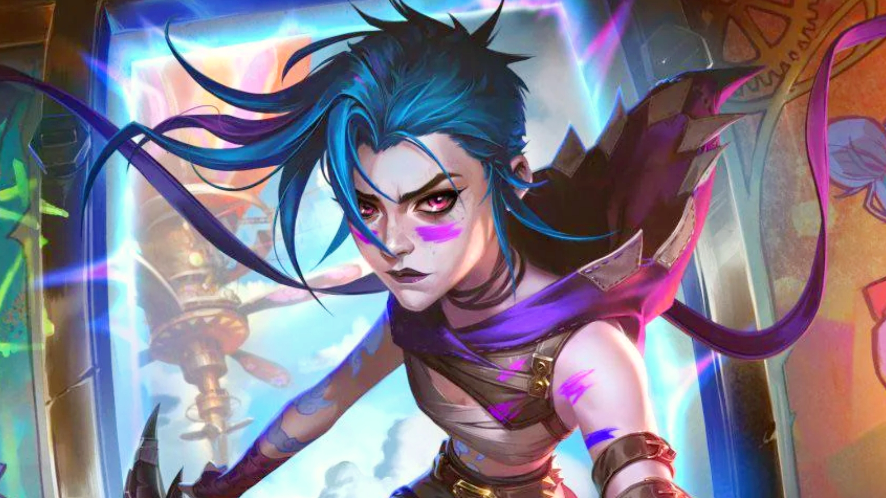

About JINX
Jinx is one of the most iconic and unpredictable characters from Arcane, the hit animated series set in the League of Legends universe. Once a sweet and shy girl named Powder, she grew up in the undercity of Zaun alongside her older sister, Vi. But everything changed after a tragic mission went wrong — her invention backfired, lives were lost, and Vi vanished. That heartbreak shattered her innocence and sparked the birth of someone new… Jinx. Now chaotic, deadly, and brilliant in her madness, Jinx is a force to be reckoned with. She’s a master of explosives, a genius tinkerer, and a living symbol of beautiful destruction. But beneath the wild laughter and neon lights, she’s still the same broken girl — haunted by her past and torn between the person she was and the person she’s become.
Jinx - The loose Cannon
Jinx Characteristics
- Unpredictable: Her erratic behavior makes her both dangerous and hard to read. She's impulsive, chaotic, and thrives in destruction.
- Emotionally Damaged: Haunted by childhood trauma, she suffers from deep emotional instability, hallucinations, and inner conflict.
- Intelligent: Jinx is a brilliant inventor and weapons expert, capable of designing complex gadgets and explosives.
- Creative: She uses graffiti, colors, and personal symbols to express her inner world — blending art with chaos.
- Violent yet Playful: She often mixes childlike joy with brutal violence, laughing wildly even in combat.
- Insecure: Beneath her loud and reckless personality, Jinx craves validation and struggles with feeling abandoned and unloved.